How to Work with a Mule Message
This tutorial walks you through how you can access information about the content, data structure, and environment of Mule Messages using various tools in Anypoint Studio and Mule runtime. It also teaches you how to access that information within your applications using Mule Expression Language (MEL).
If you completed the Basic Studio Tutorial or the How to Route Mule Messages Tutorial, you have already encountered and used some MEL expressions. Work through this tutorial to orient yourself further to MEL and how you can use it within your Mule applications to extract information from your message, set or manipulate values, or perform operations based on data extracted from the message at runtime.
Prerequisites
This tutorial assumes that you have downloaded and installed Anypoint Studio. If you do not have any previous experience with Eclipse or an Eclipse-based IDE, please review the brief introduction to the Anypoint Studio interface or complete the Basic Studio Tutorial.
If you are not using Studio, refer to the XML tabs within the following sections, which are also relevant for users of the standalone runtime: Using the Logger and Selecting Data from the Mule Message and its Environment with MEL.
This tutorial also assumes that you have a basic understanding of the Mule message structure.
Goals
In this tutorial, your goals are to:
-
Get familiar with the various ways you can access information about a Mule message and its environment in Anypoint Studio.
-
Select specific data from your message, application, Mule instance, and server using MEL expressions and log that data to the console.
-
Assign a variable.
-
(Optional) Apply your knowledge to an extra credit challenge.
Accessing Information about your Mule Messages
Before you can effectively access and manipulate your message using Mule Expression Language, you need to know what your message contains at different stages as it moves through your flow. What is the payload? What is its data type? What inbound properties are available on the message? What flow or session variables are set on the message? What are the message’s outbound properties? There are various ways to access all this information – and more – about your message and its environment. This section of the tutorial walks you through each of the following tools:
Using the Logger
One reliable and fast way to get a wealth of information about your message is to log your message to the console or a log file and examine the results. When using Mule standalone, this is the only means you have to view the message (or parts of it) as it transitions the flow; when using Anypoint Studio, this document covers below some more flexible and practical ways to access this information.
Studio Visual Editor
-
Launch Anypoint Studio and create a new Mule Project. If you need more directions on launching Studio and creating a project, please refer to the Basic Studio Tutorial.
-
Create a flow on the canvas of the visual editor, as shown.
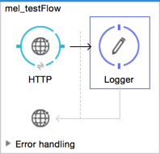 -
Configure your HTTP connector so that the path is asterisk (*) and that it has a connector configuration element with *Host* set to localhost and Port set to 8081.
-
Save and run your project by selecting your project in the Package Explorer and clicking Run > Run As > Mule Application.
-
Select the Console tab and wait for the indication that Mule is up and kicking.
-
Open a browser and point it to
http://localhost:8081. -
Observe that, by default, the logger logs all the information about the Mule message, except for the payload.
Why isn’t the payload included in this log output?
By design, the logger’s default output is all information about the Mule message except for the payload. The payload is not included because it might be very verbose or in an unreadable format. Instead, this default output includes information about the payload type, which is very useful information in a situation where you are interested in seeing a collection of all the key information about the message and its fields. Of course, logging the payload is also very easy to do: simply set the logger message to
#[message.payload].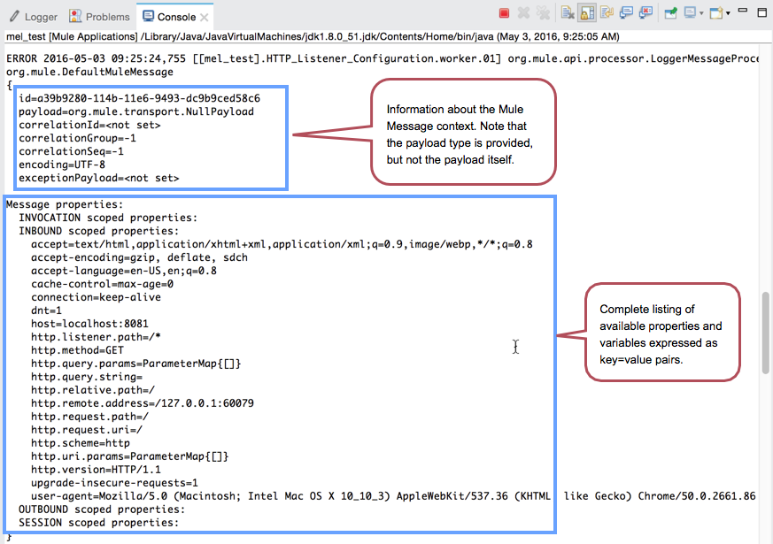 -
The key-value pairs displayed by the logger correspond to the fields of the message and the properties and variables that you can access with a Mule expression at this point in the flow. In this example, the log output provides the names and values of a long list of inbound properties set by the HTTP connector through which this message arrived into the flow. So, you could use this information to write a MEL expression to select one of these inbound properties, like this:
#[message.inboundProperties.'http.method']If you feed Mule this expression in some message processor later in your flow, Mule evaluates that expression at runtime and returns a value of GET.
You can log the Mule message to the console at any time in an application to give you quick access to this summary of data about the message and its properties and variables.
XML Editor or Standalone
If you aren’t using Anypoint Studio to develop with Mule, you still need to access information about your message to work with it using MEL. Using the logger component to surface information at various points in your flows. You can configure the logger message to produce very specific information, or leave it unconfigured to log the entire message.
-
Create a Mule application configuration file, as shown.
<?xml version="1.0" encoding="UTF-8"?> <mule xmlns:http="http://www.mulesoft.org/schema/mule/http" xmlns="http://www.mulesoft.org/schema/mule/core" xmlns:doc="http://www.mulesoft.org/schema/mule/documentation" xmlns:spring="http://www.springframework.org/schema/beans" xmlns:xsi="http://www.w3.org/2001/XMLSchema-instance" xsi:schemaLocation="http://www.springframework.org/schema/beans http://www.springframework.org/schema/beans/spring-beans-current.xsd http://www.mulesoft.org/schema/mule/core http://www.mulesoft.org/schema/mule/core/current/mule.xsd http://www.mulesoft.org/schema/mule/http http://www.mulesoft.org/schema/mule/http/current/mule-http.xsd"> <http:listener-config name="HTTP_Listener_Configuration" host="localhost" port="8081" doc:name="HTTP Listener Configuration"/> <flow name="mel_testFlow"> <http:listener config-ref="HTTP_Listener_Configuration" path="*" doc:name="HTTP"/> <logger level="ERROR" doc:name="Logger"/> </flow> </mule> -
Save and deploy your application to your Mule standalone server, using your preferred method.
-
Watch your console for indication that your application has deployed successfully.
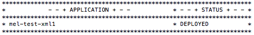 -
Point a browser to` http://localhost:8081`.
-
Navigate to your
$MULE_HOME/logsfolder and open the .log file associated with this application. -
Observe the log output produced by the message that you sent via your browser.
Why isn’t the payload included in this log output?
By design, the logger’s default output is all information about the Mule message except for the payload. The payload is not included because it might be very verbose or in a not particularly readable format. Instead, this default output includes information about the payload type, which is very useful information in a situation where you are interested in seeing a collection of all the key information about the message and its fields.
Of course, logging the payload is also very easy to do: simply set the logger message to
#[message.payload] -
The key-value pairs displayed by the logger correspond to the attributes of the message context object and the properties and variables that you could access with a Mule expression at this point in the flow. In this example, the log output provides the names of all the inbound properties that you can access, including their current values. So, you could use this information to write a MEL expression to select one of these inbound properties, like this:
#[message.inboundProperties.'http.method']If you give Mule this expression in some message processor later in your flow, Mule evaluates that expression at runtime and returns a value of GET.
You can log the Mule message at any time in an application to give you quick access to this summary of data about the message and its properties and variables.
Using Autocomplete
| Note that the autocomplete functionality described here works in the Visual Editor only. Although Studio’s XML tab does offer some autocomplete options, the suggestions there are limited by Eclipse and are not based on DataSense or Mule Expression Language. |
If you’re looking for a specific field, property, or variable and you want to check if it exists in scope as you configure a message processor, you can trigger Studio’s autocomplete feature. Opening autocomplete in Studio’s Visual Editor prompts Mule to suggest possible MEL objects, fields, and functions based on what metadata is available in the flow at that point.
In this section, you’ll use a MEL expression to access a particular inbound property of the message: the HTTP request and use that value to create a flow variable on the message.
-
Add a Variable Transformer to your flow, before the Logger, as shown.
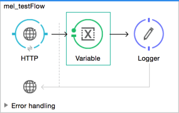Open the properties editor of your new variable transformer and select the Set Variable option. Notice that the Value fields contain #[], hinting this field accept MEL expressions (most fields accept Mule expressions as well, including the Name field too).
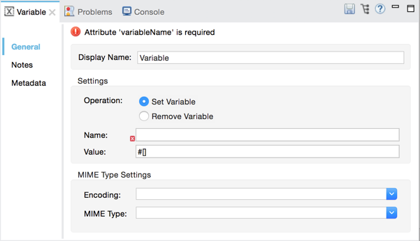 -
For this example, there’s no need to use an expression to define the flow variable name, so enter
path. -
Place your cursor inside the brackets in the Value field, then press CTRL + Spacebar to trigger autocomplete.
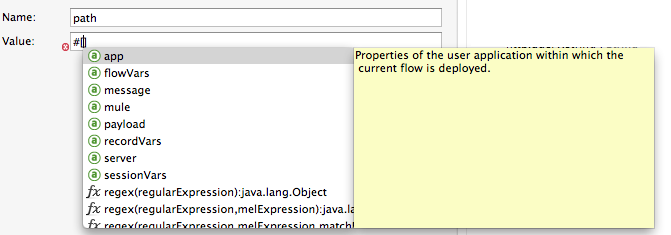 -
Studio displays a list of context objects and other operands and functions, based on which are most commonly used in Mule. Select message, then add a period.
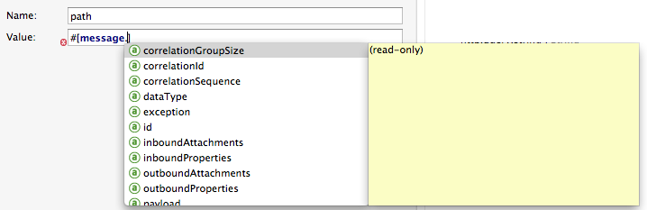 -
Studio now displays a list of available fields and properties of the context object message. Note the red X next to the field indicates that, as it is currently written, the expression is not well-formed. Select inboundProperties and note how the red X immediately disappears. The expression
#[message.inboundProperties]is technically complete. Mule evaluates this and returns a map of all inbound properties on the message. -
After inboundProperties, add another period to trigger autocomplete again. This time, select
http.request.path, as shown below: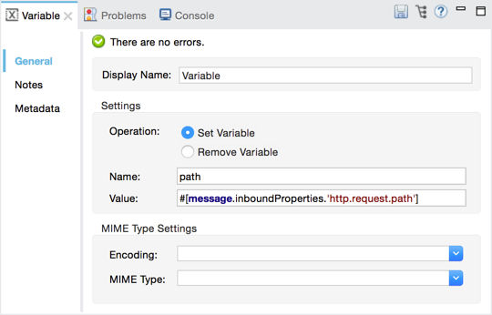You have now configured the variable transformer to set a flow variable called path with a value that Mule evaluates at runtime based on this MEL expression:
#[message.inboundProperties.'http.request.path']
Using DataSense Explorer
You have access to an additional view in Studio immediately to the right of your message processor properties editor tab called the DataSense Explorer. As you select building blocks on your canvas and view the properties editor in the console, the DataSense Explorer displays information about your payload, properties, and variables, as well as their data types as your message enters that building block and as it exits. Click the In and Out buttons to observe how the processing in the selected building block affects the Mule message.
Note that the path variable appears in the Out view, reflecting what you have configured within this message processor.
|
Not seeing a change in the output? In order to refresh the view in the DataSense Explorer, you may need to click out of the properties editor, then click the building block again to return to it. |
For more information on how you can use the information in this panel during design time, see Using the DataSense Explorer.
Using Visual Debugger
For the most comprehensive, layered view of your message, run your application in Debug mode.
-
If your application is still running, stop it by clicking the red square in the console.
-
Right-click on the Logger component on your canvas, then select Toggle Breakpoint. Do the same for the Variable Transformer.
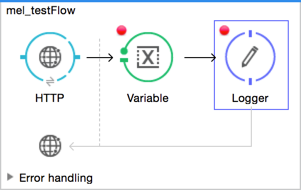 -
Start the application in debug mode. Click Run > Debug As > Mule Application and follow the prompts. This adds the Mule Debug button to Studio.
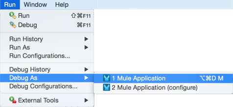 -
Click Mule Debug in the upper left corner of the Studio application to switch to the Mule Debug perspective.
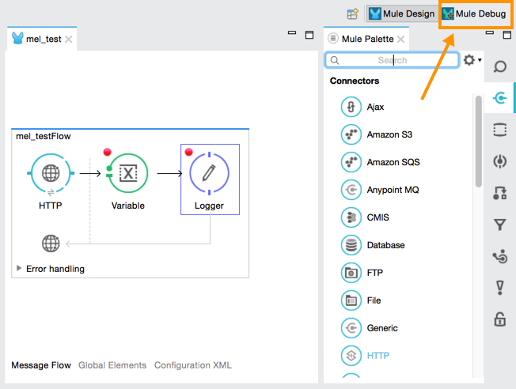 -
Studio automatically switches you to the Mule Debugger View tab once the application is started. Send your browser to
http://localhost:8081/hello?language=englishto trigger a new message. -
Mule catches the message and pauses it at the first breakpoint in your flow. On the canvas, the location of your message is highlighted, as shown.
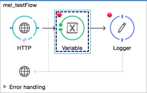 -
Below your canvas, the Mule Debugger View displays two panels of information about your message as it hits this breakpoint in the flow. The panel on the left lists information about the payload and the immediate message context in a tree structure. The panel on the right lists all available metadata at this point in the flow. The right panel is organized into four separate tabs that represent the four metadata scopes that you can access and manipulate on your message: inbound properties, outbound properties, flow variables, and session variables.
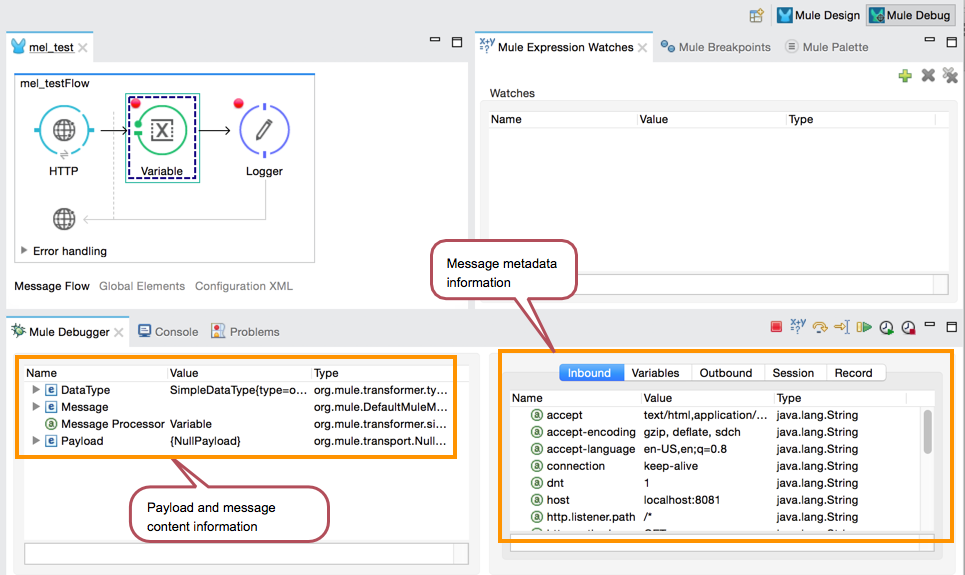 -
Browse through the tree structure under Message in the left panel and through the four tabs in the right panel and observe the detailed information about the message that is available. For each named object or field, the Debugger View displays the current value and the data type. For example, open the Message node in the left panel and note that your payload type is
org.mule.transport.NullPayload. -
In the right panel, note that your http.query.params are structured as an
org.mule.module.http.internal.ParameterMap. Click the http.query.params node to expand it, then expand the first item beneath it. Observe that each parameter is itemized with its index number, and each of those can be expanded further to expose the key and value within each map entry. The data type column reveals the underlying data structure for each level of information.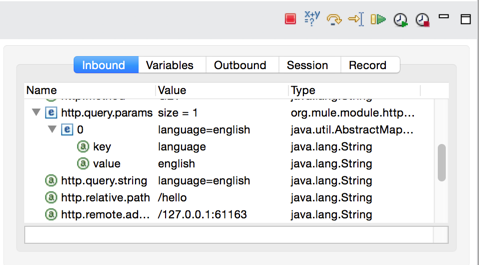 -
Switch to the Variables tab in this panel. Note that because the breakpoint stops the message before the processing inside that message processor occurs, there are no variables set on the message yet, so this panel is empty.
-
Press F8 or click the Resume icon () to prompt Mule to unpause processing and continue to the next breakpoint, which, in this example, is the Logger. Note that the Variables tab now includes one entry.
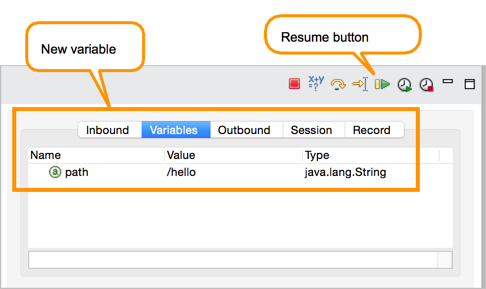 -
The Debugger display informs you that you now have access to the flow variable that was set by the Variable Transformer in the previous step in the flow, which was configured to resolve the following expression and store the result in the flow variable named
path:#[message.inboundProperties.'http.request.path']
As the Debugger demonstrates, the MEL expression has done what you asked it to: access the message’s inbound property
http.request.pathand return its value – in this case, "/hello". The Debugger tells you the name of the variable, the current value, and the data type.To see a representation of the MEL expression that would access the flow variable, session variable, or outbound property, click its value and change it to something else, keeping the quotes intact, as shown.
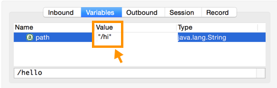This feature of Debugger allows you the flexibility to troubleshoot issues later in your flow that might rely on values earlier in the flow, but it is also helpful if you are learning MEL and need some hints about how to form expressions to correctly access a particular part of your message.
Note that this only works for mutable metadata. Because inbound properties are immutable (such as
http.request.path), you cannot edit them in the Debugger.
Using the Mule Expression Evaluator
The most direct and dynamic way of exploring which MEL expressions resolve as you expect them to is to use the Mule Expression Evaluator within the Visual Debugger. You can access the Mule Expression Evaluator while running in Debug mode, after having sent a message and paused it at a breakpoint in your flow.
-
With your flow paused at your Logger breakpoint, open the Mule Expression Evaluator by clicking the 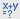 icon. In the yellow box that opens, you can test out any MEL expression. Mule immediately evaluates the expression, relative to the breakpoint in your flow where your message is currently paused, and either returns a value or throws an exception.
-
Try out the following MEL expressions in the Mule Expression Evaluator and note the results:
MEL Expression Description #[message.payload]To have a payload, your incoming request should add a body.
Value Returned:
{NullPayload}
Type: org.mule.transport.NullPayload#[message.payload == null]This confirms that your payload is null.
Value Returned:
true
Type: java.lang.Boolean#[flowVars.path]This is the value and type of the flow variable that you recently set.
Value Returned:
/hello
Type: java.lang.String#[flowVars]This expression asks Mule to return a map with all flow variables on the message. In this case there is only one entry. Note that you can expand the results.
Value Returned:
{path =/hello}
Type:org.mule.el.context.MessagePropertyMapContext#[sessionVars.svpath = 'inbound path is' + flowVars.path]This expression creates a session variable called svpath and assigns it a value by concatenating the string 'inbound path is' with the current value of the flow variable path.
Value Returned:
inbound path is /hello
Type: java.lang.String#[server.dateTime]This expression calls the dateTime function and returns the date in the default format.
Value Returned:
2014-12-11T13:16:45.448-03:00
Type: org.mule.el.datetime.DateTime#[UUID.randomUUID()]This expression generates a random UUID.
Value Returned:
6ec58883-a1c2-4648-b0df-abcd849534a1
Type: java.util.UUID#[System.out.println('Hello, World!')]This expression doesn’t resolve to a value, hence the null value returned by the expression evaluator. However, it does result in Hello, World! displayed in your console.
Value Returned:
null
Type: null#[2 + 2]MEL can also do math.
Value Returned:
4
Type: java.lang.Integer#[message.payload = ('fubar' contains 'bar') ? 'Yes!' : 'Nope!']This conditional assignment statement evaluates the comparison in the parentheses, then selects the first value after the question mark if true and the second value if false, then deposits that value into the target (in this case, the payload.)
Value Returned:
Yes!
Type: java.lang.String
For more ideas on MEL expressions to test out in the Mule Expression Evaluator, refer to the syntax guide or borrow some from the collection of introductory MEL examples.
Selecting Data from Mule Messages and Their Environment with MEL
Studio Visual Editor
Now that you’re familiar with how to access information about your message and its environment, try logging some other basic data to the console with this logger message:
#[app.name] running on Mule version #[mule.version] on #[server.userName] arrived with the path #[flowVars.path]
-
Open your logger and enter this text into the Message field of the logger:
#[app.name] running on Mule version #[mule.version] on #[server.userName] arrived with the path #[flowVars.path]
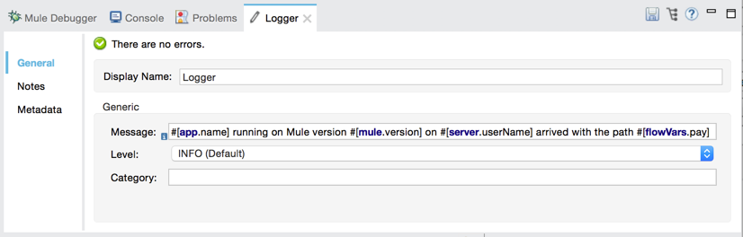 -
Save and run your project.
-
Point your browser to
http://localhost:8081/Polly, but replace "Polly" with your own name. -
Observe the results in your console.
INFO 2016-05-03 14:40:02,393 [[mel_test].connector.http.mule.default.receiver.02] org.mule.api.processor.LoggerMessageProcessor: mel_test running on Mule version 3.8.0 on PollyMacbook arrived with the path /Polly
Your results can vary depending on these factors:
-
What you named your Mule project
-
What runtime version you are using
-
The name of your computer
-
The name you typed into your browser
XML Editor or Standalone
In your existing project that you created in the Using the Logger section,
-
Modify your flow to include a set-variable element with the name
pathand a value of
#[message.inboundProperties.'http.request.path']<set-variable name=path value="#[message.inboundProperties.'http.request.path']"/> -
Configure your logger element with the following message:
#[app.name] running on Mule version #[mule.version] on #[server.userName] arrived with the path #[flowVars.path]<logger level="INFO" message="#[app.name] running on Mule version #[mule.version] on #[server.userName] arrived with the path #[flowVars['path']]"/> -
Save and run your revised project.
-
Point your browser to http://localhost:8081/Polly, or replace "Polly" with your own name.
-
Navigate to your
$MULE_HOME/logsfolder and open the .log file associated with this application. -
Observe the log output produced by the message that you sent via your browser.
org.mule.api.processor.LoggerMessageProcessor: mel_test running on Mule version 3.8.0 on PollyMacbook arrived with the path /Polly
Your results can vary depending on these factors:
-
What you named your Mule project
-
What runtime version you are using
-
The name of your computer
-
The name you typed into your browser
Your complete application XML, once edited, should look like the following:
<?xml version="1.0" encoding="UTF-8"?>
<mule xmlns:http="http://www.mulesoft.org/schema/mule/http" xmlns="http://www.mulesoft.org/schema/mule/core" xmlns:doc="http://www.mulesoft.org/schema/mule/documentation"
xmlns:spring="http://www.springframework.org/schema/beans"
xmlns:xsi="http://www.w3.org/2001/XMLSchema-instance"
xsi:schemaLocation="http://www.springframework.org/schema/beans http://www.springframework.org/schema/beans/spring-beans-current.xsd
http://www.mulesoft.org/schema/mule/core http://www.mulesoft.org/schema/mule/core/current/mule.xsd
http://www.mulesoft.org/schema/mule/http http://www.mulesoft.org/schema/mule/http/current/mule-http.xsd">
<http:listener-config name="HTTP_Listener_Configuration" host="localhost" port="8081" doc:name="HTTP Listener Configuration"/>
<flow name="mel_testFlow1">
<http:listener config-ref="HTTP_Listener_Configuration" path="*" doc:name="HTTP"/>
<set-variable name=path value="#[message.inboundProperties.'http.request.path']"/>
<logger level="INFO" message="#[app.name] running on Mule version #[mule.version] on #[server.userName] arrived with the path #[flowVars.path]"/>
</flow>
</mule>Extra Credit
Now that you know your way around the Mule message and you’ve seen some examples of how to use MEL to access information from it, try applying your knowledge to an extra task.
Using MEL, you can do more than just access data, you can also manipulate the message payload, attachments, variables, and outbound properties. (Because a message’s inbound properties are set by the message source, you can’t change those.)
Create a new Mule project that:
-
Sets the following map as the message payload: ['favorite_animal':'mule','favorite_color':'blue','favorite_day':'today']
-
Uses a MEL expression to change the value of your favorite day from the string 'today' to the day of the week that it is as you read this tutorial, without altering the rest of the payload
-
Logs the resulting payload to the console in a human-readable format.
To achieve this, write three MEL expressions in three different message processors. The first expression sets the payload to a map, the second accesses the correct map key=value pair and replaces the value of that item with a dynamically evaluated value, and the third logs the resulting payload.
Don’t hesitate to use the tools in Anypoint Studio to help you work out how to form these expressions. Use the hints below if you need help.
Hints and Answers
These sections provide hints and answers for how you can do more with MEL.
Hints
How do I set a map as my payload?
Use a Set Payload transformer and set the value to:
#[['favorite_animal':'mule','favorite_color':'blue','favorite_day':'today']]
Be sure to check your brackets!
Which message processor allows me to use MEL to manipulate one part of my payload while leaving the rest intact?
Use an Expression Component in your flow to manipulate parts of the Mule message without replacing the entire payload. Note that an expression component and expression transformer look very similar, but the latter always sets the value of the expression as the new payload of the message, so you don’t want that in this case.
How do I form the part of the expression that accesses just the part of the map that I want?
Include message.payload.favorite_day in a MEL expression to access the value of the 'favorite_day' map item.
How do I form the part of the expression that calculates the day of the week?
Use the server.dateTime function, then format the result by calling the format() method, passing the argument 'EEEE'. Based on SimpleDateFormat, which returns a string in the form of the day of the week.
Help! I ran my application and it returns some kind of file instead of logging to the console.
Try running your application in Debug Mode with breakpoints on your message processors. What payload type do you observe? Is that payload type serializable? If it is, Mule is converting your payload to a byte array per its default behavior. In this case, you want a nice readable string instead, so you need to add an additional message processor after your expression component to change your data type. Browse through the transformers drawer in the palette to find the appropriate one that does the trick.
 Answer
Answer
View the answer, including explanation of steps and complete code
There is more than one way to achieve the goals outlined above, but here is the fastest way:
-
Create a new Mule project with building blocks for HTTP, Set Payload, Expression, Object to String, and Logger:
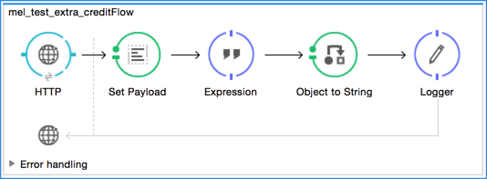Drag an HTTP connector onto the canvas. Create a configuration element for it with host set to localhost and port set to 8081. Then, back in the connector set the path to /.
-
Add a Set Payload transformer after the HTTP connector. Set the value to
#[['favorite_animal':'mule','favorite_color':'blue','favorite_day':'today']] -
Add an Expression Component after the Set Payload. In the Expression field, enter:
message.payload.favorite_day = server.dateTime.format('EEEE')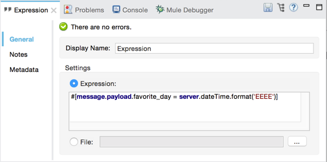
Note that you do not need to put #[] around the statement, because the expression component adds the expression syntax automatically. In XML, the expression component looks like this:
<expression-component doc:name="Expression"><![CDATA[message.payload.favorite_day = server.dateTime.format('EEEE')]]></expression-component>The left side of the expression accesses the 'favorite_day' item in your map. The right side of the expression calculates the day of the week using a server.dateTime expression. The equals sign assigns the day of the week to the 'favorite_day' map item.
. Add an Object to String transformer after the Expression Component. Because the payload is serializable, Mule automatically converts it to a byte array, unless otherwise instructed. In this case, you want human-readable output. Adding this transformer produces a string.
. Add a logger and set the message to #[message.payload] to log the new payload.
. Save your project, then run it locally.
. Go to a browser and request http://localhost:8081. Your browser should print a map similar to the following: {favorite_animal=mule, favorite_color=blue, favorite_day=Wednesday}
Full Code of the Extra Credit Application
<?xml version="1.0" encoding="UTF-8"?>
<mule xmlns:http="http://www.mulesoft.org/schema/mule/http" xmlns="http://www.mulesoft.org/schema/mule/core" xmlns:doc="http://www.mulesoft.org/schema/mule/documentation"
xmlns:spring="http://www.springframework.org/schema/beans"
xmlns:xsi="http://www.w3.org/2001/XMLSchema-instance"
xsi:schemaLocation="http://www.springframework.org/schema/beans http://www.springframework.org/schema/beans/spring-beans-current.xsd
http://www.mulesoft.org/schema/mule/core http://www.mulesoft.org/schema/mule/core/current/mule.xsd
http://www.mulesoft.org/schema/mule/http http://www.mulesoft.org/schema/mule/http/current/mule-http.xsd">
<http:listener-config name="HTTP_Listener_Configuration" host="localhost" port="8081" doc:name="HTTP Listener Configuration"/>
<flow name="mel_testFlow1" doc:name="mel_testFlow1">
<http:listener config-ref="HTTP_Listener_Configuration" path="*" doc:name="HTTP"/>
<set-payload value="#[['favorite_animal':'mule','favorite_color':'blue','favorite_day':'today']]" doc:name="Set Payload"/>
<expression-component doc:name="Expression"><![CDATA[#[message.payload.favorite_day = server.dateTime.format('EEEE')]]]> </expression-component>
<object-to-string-transformer doc:name="Object to String"/>
<logger message="#[message.payload]" level="INFO" doc:name="Logger"/>
</flow>
</mule>See Also
-
NEXT STEP: Learn how to start and stop Mule from the command line.
-
Refer to the main MEL documentation including the collection of examples, which demonstrate how to use MEL expressions in a variety of other message processors.
-
Access the Mule Expression Language reference page for a searchable listing of context objects and their fields, operations, and functions.
-
Learn more about Visual Debugger, the Logger, and DataSense.
-
If you haven’t already, try some of our other tutorials, all of which involve using MEL expressions: